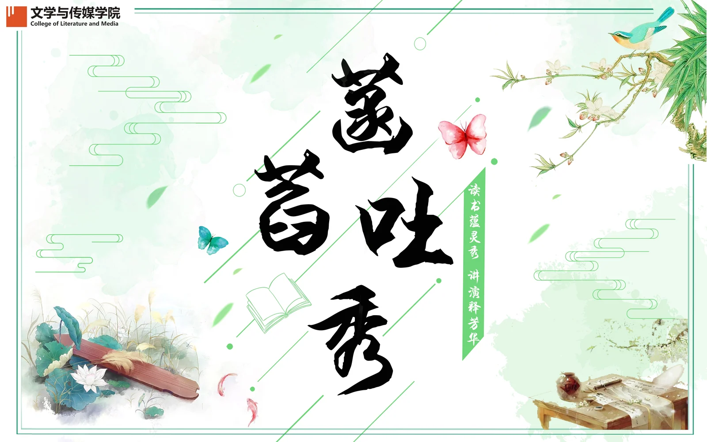
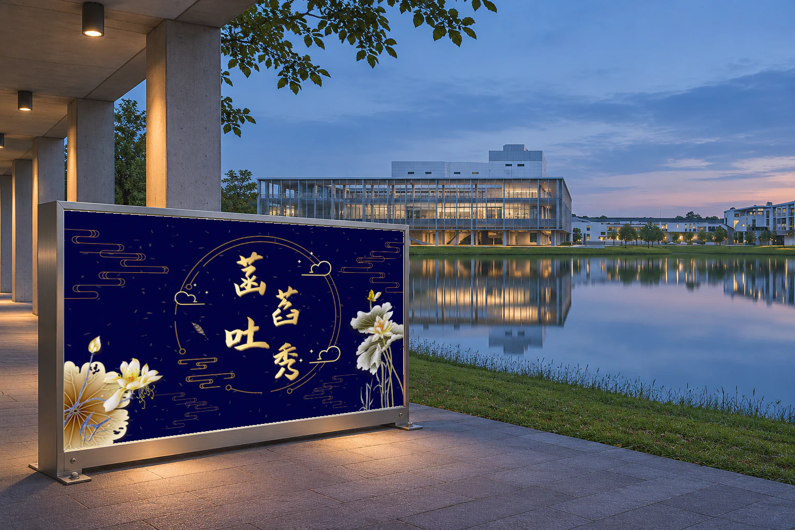

跳至主要内容
灵感展场
作品
Work
灵感展区
CHOOSE A HALL
01
包装设计
Packaging Design
当前
02
品牌设计
Brand Identity
当前
03
活动物料设计
Event Materials
当前
04
插画设计
Illustration
当前
05
海报设计
Poster Design
当前
查看全部作品
关于
About
联系
Contact
KALINA’S INSPIRATION GALLERY

青绿水墨版
墨色题字偏左错落，青绿水墨散落在四角。
深蓝金色版
金色题字置于圆环内，两侧荷花收拢视线。
青绿水墨版 · 文科楼过廊

深蓝金色版 · 大礼堂临水夜廊
项目介绍
Project Introduction
海报名称
菡萏吐秀
举办单位
东莞理工学院文学与传媒学院
设计风格
新中式书法海报，青绿水墨与深蓝金线双版